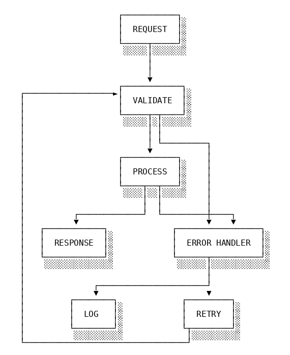
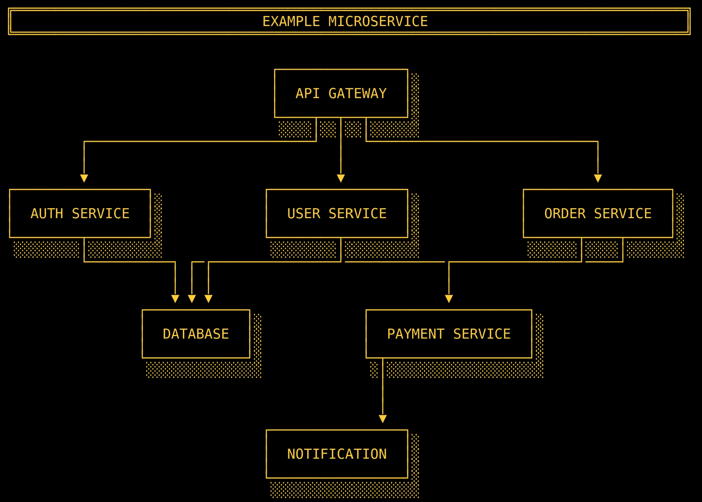
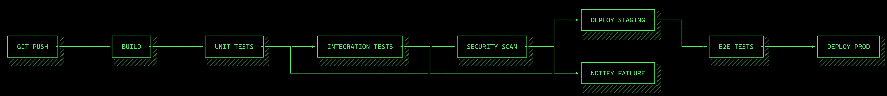
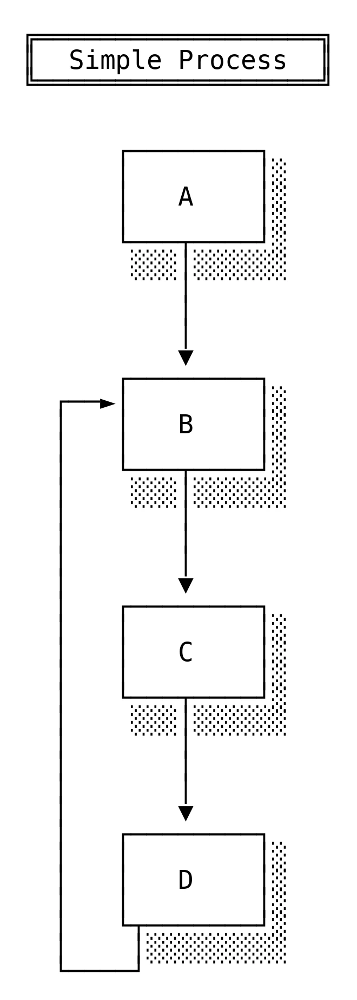
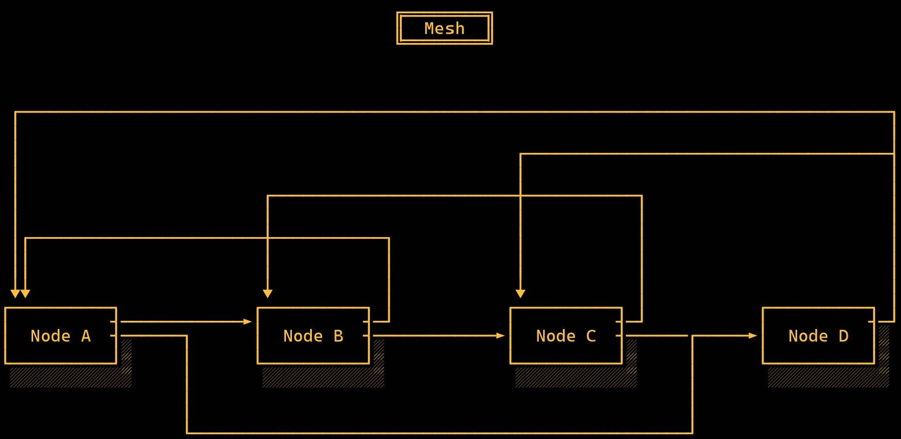
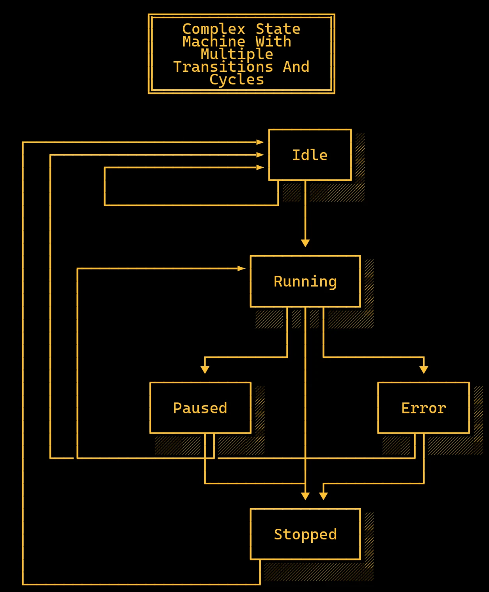

Roni Kobrosly Ph.D.'s Website
written by Roni Kobrosly on 2026-01-09 | tags: engineering open source agentic ai
Okay, I decided to take that free-floating ASCII diagram code and make it into a proper open-source python package. I present to you “RetroFlow”. On the surface it seems silly, but there are a lot of advantages to using ASCII flowcharts, particularly in this age of agentic AI.
The package on GitHub and PyPi.
Beyond looking like something out of a technical document from the early days of computing:
- They work wonderfully in the age of agentic AI, which can easily read, parse, and understand these small process representations.
- ASCII diagrams can live inline with: PRs, Markdown files, Slack threads, etc.
- ASCII diagrams optimize for thinking speed, not presentation quality. It encourages iteration and deletion instead of premature refinement.
- Minimalist diagrams reduce visual noise (although they do still look retro and pretty)
- They're tool agnostic and can be rendered anywhere
The package takes a simple string like this...
REQUEST -> VALIDATE VALIDATE -> PROCESS PROCESS -> RESPONSE VALIDATE -> ERROR HANDLER PROCESS -> ERROR HANDLER ERROR HANDLER -> LOG ERROR HANDLER -> RETRY RETRY -> VALIDATE
and converts it into a text file or a high-resolution image like this...

It abstracts away the complex decisions around layout, while giving you some choices around vertical versus horizontal layout, title banners, and a bit more. It can also handle cycles and bidirectional elements in your flowchart! Let me know what you think!
Here are some more examples of what you can do with RetroFlow:





